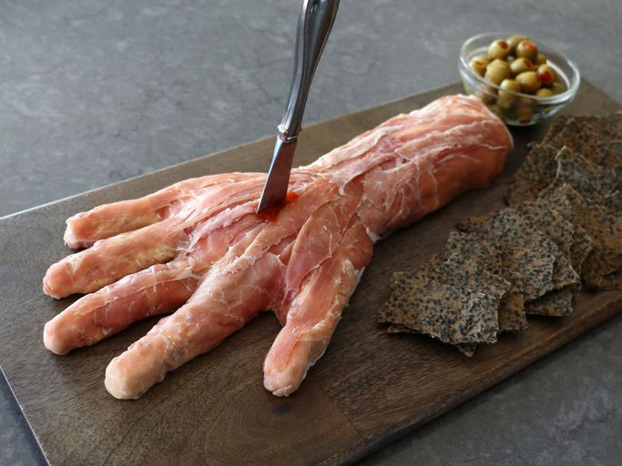

< Back
“Horrible Hand” Ham and Cheese Board

Description
Ideal for Halloween, this "horrible hand" ham and cheese board will be the life of your party. This exceptionally creepy skinned hand is best served very cold, with crackers, hot sauce "blood"—and a dagger.
Ingredients
- 1 1/2 pounds cream cheese, softened
- 1/3 cup finely chopped roasted red pepper
- 2 tablespoons chopped fresh Italian parsley
- 1/2 teaspoon greshly ground black pepper
- 1/4 teaspoon garlic powder
- 1/4 teaspoon salt
- 1 pinch cayenne pepper
Steps
- Add cream cheese, red pepper, parsley, black pepper, garlic powder, salt, and cayenne to a bowl and mix thoroughly. Cover surface with plastic wrap, and chill until firm, about 30 minutes.
- Trace your hand on a piece of parchment. Turn parchment over, and place on a baking sheet.
- Use two teaspoons to fill in the hand template with the chilled cheese mixture. Build cheese up in appropriate spots to form the 3-dimensional shape of a hand and wrist.
- Cover with plastic wrap and freeze until very firm, about 1 hour.
- Use a knife to separate fingers from hand and hand from wrist. Wrap each piece with prosciutto, tucking extra meat underneath. Cover, and place in freezer about 1 hour, or until ready to complete assembling the hand.
- Place the hand section on a serving board first, then attach the fingers and the wrist. Use your own hand as a reference for placing parts of the hand. Use more prosciutto to cover seams, and to add detail and definition. Refrigerate until ready to serve.